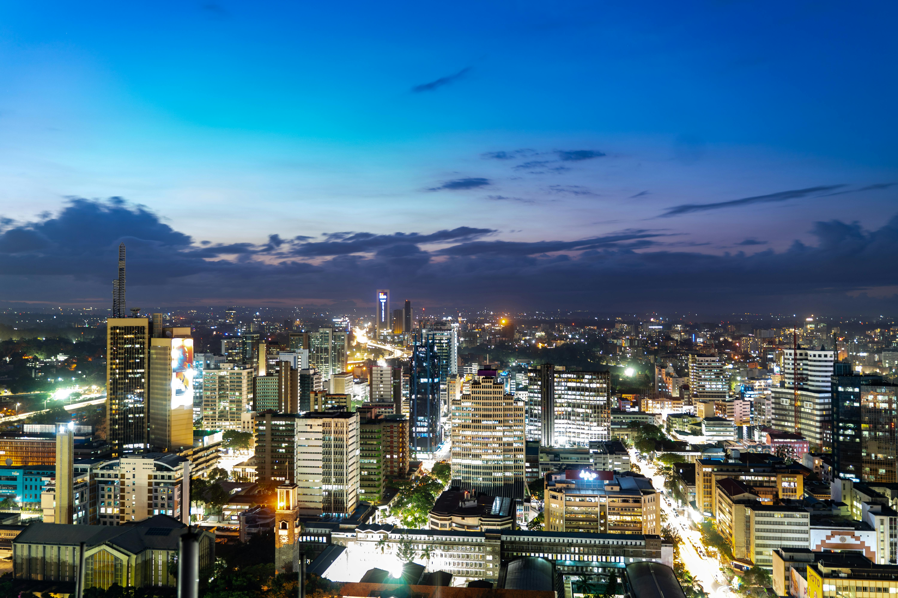
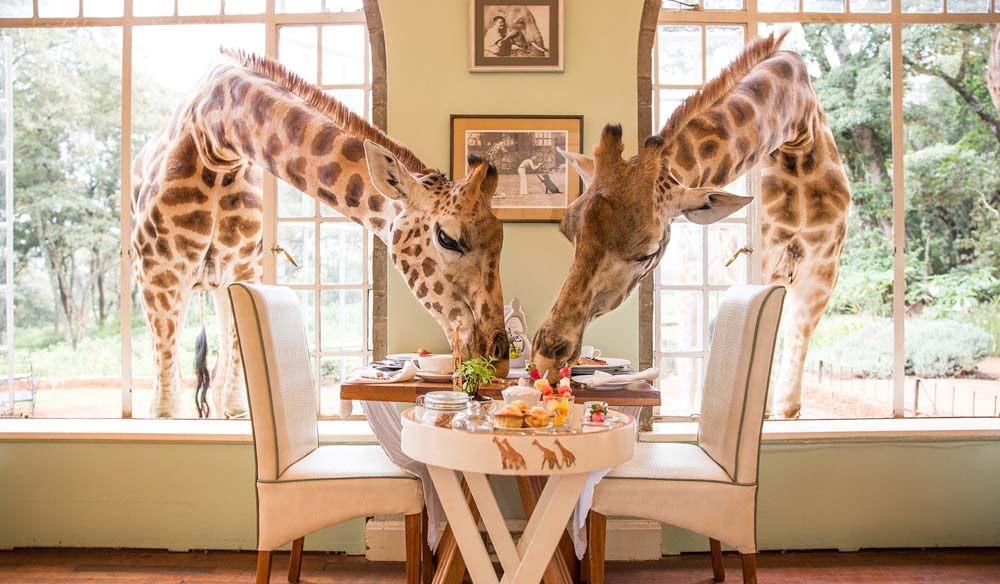
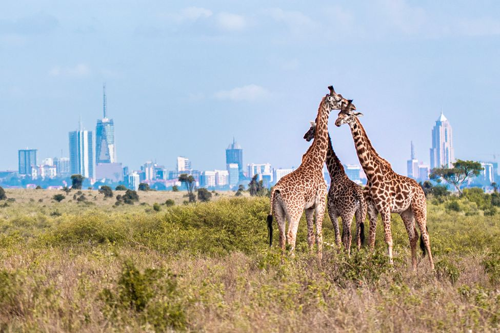

PHOTOGRAPHY
Photography is a way that people can express themselves.
The moment you use a camera to capture any moment, it's stored forever. Even when the camera is damaged, the moments are still in the storage.
The cameras or even phones used to capture any moment, either joyful or sadful, remind you of those moments even in your old ages.
BIOGRAPHY
Hi,welcome to this website. Photography has been our way of seeing the world differently. What started as a hobby turned into a passion for capturing real, raw moments — the smiles, the details, the little things that often go unnoticed.
We believe every photo tells a story, and through our lenses, we try to preserve those stories so they can be remembered forever. Whether it is portraits, everyday life, or the beauty of nature, our goal is to create images that connect with people and spark emotion.
In this website, we have displayed the work we have done through photography.
The pictures below are some of our projects ever since we begun this journey. It is a project of two members :

Jim Ochieng

Josephine Atieno
OUR PROJECT PHOTOS
- 
- 

- 